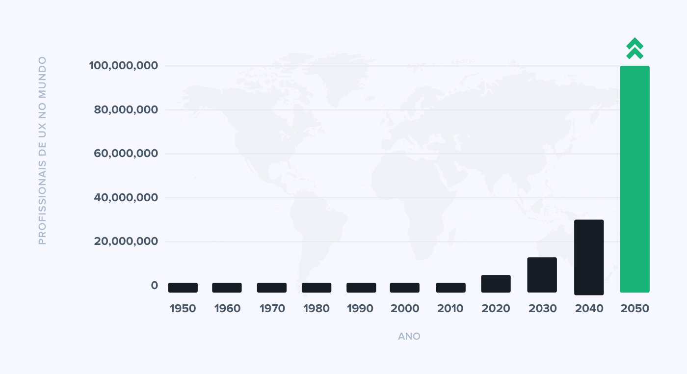

Experiência com UX
"A experiência do usuário obedece a um ciclo, que pode ser curto ou longo, dependendo das particularidades do produto ou serviço em questão."
O ciclo começa com o primeiro uso ou contato com o produto, vai evoluindo com a utilização regular e, eventualmente, pode chegar ao declínio, com a substituição por uma solução melhor.

O profissional de UX deve entender, portanto, não apenas o que o usuário quer, mas qual a experiência que a marca deseja oferecer.

Para isso, deve compreender os mais diversos tipos de personas da marca ou serviço.
UX é componente macro?
Micro UX vs Macro UX
Micro UX é o processo de olhar os projetos com uma aproximação inversa do Macro UX, envolve pensar sobre os menores detalhes do design primeiro. Se formos pelo exemplo do hamburguer ao lado (só não pode ficar com fome), em micro UX, nossa preocupação seria em torno de oferecer os melhores ingredientes, quem sabe uma carne de primeira? 😋
em Macro UX a preocupação seria em torno da experiência do cliente e apresentação do produto, como por exemplo usar um palito de dentes para segurar o hamburger no lugar ou garantir que ele seja servido quente.
Não existe certo ou errado, cada caso é um caso e veremos agora como definir qual estratégia é melhor para seu produto
Como escolher a certa?
A imagem é legal mas tem spoilers 😕
Ir pelo micro ux pode ser uma boa estratégia para novos projetos ou projetos inovadores, os quais ainda não tem público consumidor bem definido. Também é uma ótima escolha para produtos que visam competir num mercado já estabelecido, sendo possível trabalhar as falhas dos competidores já estabelecidos no mercado. Pode ser útil para produtos que precisem ser atualizados mas sem perder sua essência.
O fato é que o foco da industria tem se voltado para o micro UX e os profissionais da área vão ter que se adequar, porém a solução ideal é que tanto macro quanto micro ux trabalhem juntos para garantir que o consumidor consiga o que ele busca com o produto mas também se encante com os pequenos detalhes do seu produto
O que é uma boa UX?
como definir uma boa e má experiência? 🤔
Apesar da subjetividade do tema e da individualidade de cada um, existem formas de ser avaliar através de métricas como as heurísticas de Nielsen Norman ou o favo de mel da experiência do usuário por Peter Morville (imagem central) que podem nos guiar nesse desafio que é criar boas experências para os usuários.
Normalmente 3 pilares são importantes para uma boa experiência;
Utilidade
Facilidade de uso
Prazer
Mesmo com a complexidade em se avaliar, algumas características são importantes para uma boa estratégia de UX;
Coragem : Para inovar e não ser "mais um" e ir além dos padrões da indústria
Clareza : Para evitar ambiguidades e interpretações erradas comprometendo as tomadas de decisão
Realismo : Para se manter em harmonia com toda a organização (Não podemos esquecer que UX é uma parte de um conujnto maior)
A popularização da UX
Não aguenta mais ouvir falar em UX? 😡
A UX chegou para ficar, conforme o mercado e a competição crescem, se certificar que seu cliente ou usuárior tenha uma boa experiência é fundamental para garantir o $uce$$o das empresas e por isso cada vez mais se investe nesse segmento que vêm mostrando um retorno superior aos setores de comunicação e marketing
O gráfico ao lado mostra o número de profissionais de UX no mundo, a estimativa é de 100 milhões até 2050
Um infográfico de 2015 já mostrava a importância de investimento em UX. Alguns dados importantes;
89% dos consumidores que tiveram uma experiência negativa passaram a consumir da concorrência.
O custo para atrair novos clientes é 6x maior do que manter os antigos.
Aumento de 2,6% nas vendas apenas trocando um link textual por um botão.
IHC e UX são iguais?
😮
IHC é o estudo de como os humanos interagem com computadores e outros tipos de tecnologias e nos últimos anos foi expandido para cobrir mais campos que incluem ciências não computacionais como; ciência cognitiva, linguistica, antropologia cultural, sociologia, psicologia e design visual. IHC tende a ser um campo mais acadêmico lidando com pesquisas e entendimentos empíricos de como os humanos são afetados pela tecnologia.
Ficamos exatamente iguais ao pikachu quando descobrimos a complexidade e amplitude do campo de IHC/UX durante os estudos
UX é um aspecto mais prático da IHC e como o nome sugere foca em como os usuários interagem com algum tipo de tecnologia os designers de UX seguem processos que os permitem entender os conceitos chaves da interação; Contexto de uso, requerimentos de usuários, design estético e tende a ser um processo contínuo que se retroalimenta conforme mais usuários interagem com as tecnologias
Exemplo bem sucedido
Talvez vocês já tenham ouvido falar dessa empresa
O exemplo que trouxemos é uma empresa promissora de varejo online e que vem mostrando excelentes resultados graças aos investimentos em UX, ficou conhecida entre muitas outras coisas, pela facilidade que proporciona à seus clientes que vão além do uso da interface do seu site, mas também ao pós venda e assistência aos usuários

Segundo o responsável pelo departamento de UX da empresa o investimento em UX gera um retorno de até $100 para cada $1 investido
Parabéns Amazon, pelo seu esfoço, com certeza algum dia será reconhecida 🤡

Carreiras em IHC (e UX)
A imagem abaixo é só uma parte do leque de oportunidades
cargos e campos
Praticamente todas as nomenclaturas existentes podem se aplicar a cargos relacionados à IHC/UX por exemplo; engenheiro, designer, desenvolvedor,especialista, estretegista, head, líder, coordenador, gerente, consultor (De UX, acessibilidade, sistemas cognitivos, produtos, interação, integração, serviços...)
É uma infinidade de opções que realmente não havia pensado sobre até começar a pesquisar
algums exemplos;
Pesquisador
UI designer
UI Developer
Design thinker
Designer gráfico
Arquiteto da Informação
Engenheiro de requisitos
Designer de acessibilidade
Engenheiro de Sistemas cognitivos
Mercado de Trabalho
Porque ganhar dinheiro é bom
O mercado de IHC/UX é muito promissor, como mostrado anteriormente tende a um enorme crescimento e como já vem acontecendo nos últimos anos. Esse mercado fica ainda mais atrativo com possibilidades globais se levarmo

Globalização é o processo de implementação de práticas de negócios e processos necessários para levar um produto globalmente, por exemplo, técnico, marketing, pessoal. Localização é o processo de adaptação de um produto aos requisitos de uma localidade de destino. Internacionalização é o processo de projetar e desenvolver software ou aplicativos da Web para que possam ser facilmente adaptados a vários ambientes linguísticos e culturais sem programação ou engenharia adicional
Referências, dúvidas e contatos
Para reclamações, críticas e elogios (claro)
Igor Carvalho
igor.carvalho@ufba.br
Referências
- Carreiras em UX
- O que faz uma UX boa
- 4 Cases de sucesso em UX
- Getting started with micro UX
- O que você fará como UX Designer
- 4 techniques to create a awesome UX
- User experience: O que é, princípios e carreiras
- O que faz uma estratégia em UX ser bem sucedida
- O "Booom" dos profissionais de UX
- Como aplicar UX no seu negócio
- Os UX designers não são iguais
- Como começar na carreira
- Como atuar na área de UX
- Vale a pena investir em UX?
- IHC & UX

Conteúdo Extra - Vídeos
Para assistirem depois da apresentação do Gabriel e da Larissa que vai ser TOP!
Uma visão rápida da vida de um profissional de UX Design (Em inglês)
Tire suas dúvidas sobre UX
Fique por dentro das habilidades necessárias para trabalhar com UX! (Em inglês)